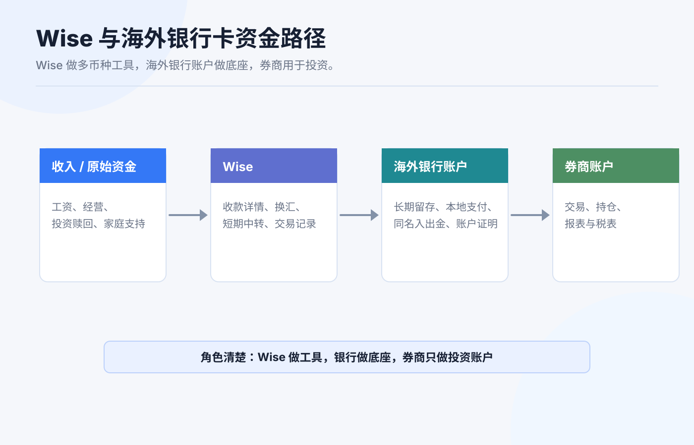
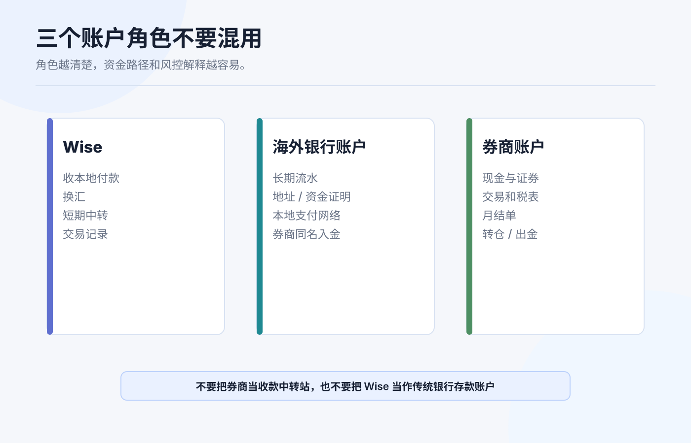
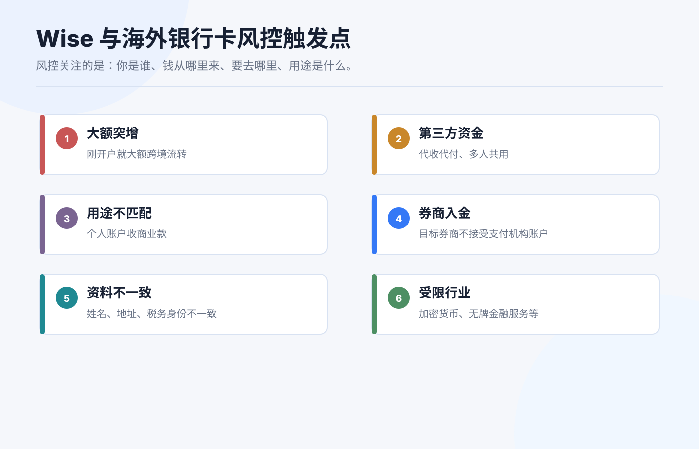
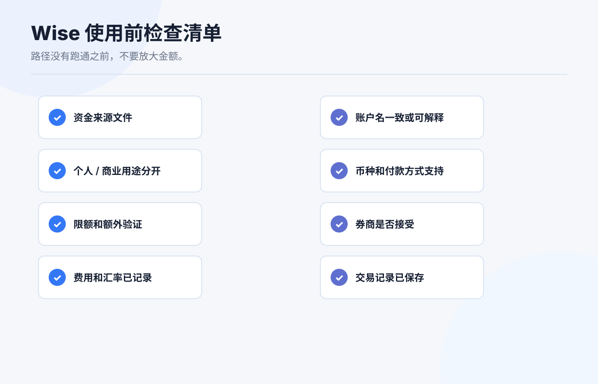

Wise 与海外银行卡：资金流转路径和风控注意事项
Wise 和海外银行卡经常被放在一起讨论：一个能收多币种、换汇、转账；一个能连接本地银行网络、刷卡、入金券商。看起来都在解决“钱怎么跨境流动”的问题。
但它们不是同一种账户。
Wise 更像多币种资金工具和支付机构账户；海外银行卡背后是某个银行账户、本地支付网络和存款保障体系。两者都能好用，也都可能因为用途、金额、交易对手和资料不完整而触发风控。
本文为个人经验记录和资金流转风控认知框架，不构成投资、税务或法律建议，也不是换汇或跨境汇款建议。不同国家、账户实体、客户身份、币种和用途会触发不同规则，实际操作前以 Wise、银行、券商和监管机构当前口径为准。资料核对日期：2026-07-14。

先讲结论
Wise 和海外银行卡的关系，可以用一句话概括：
Wise 适合做多币种收款、换汇和中转；海外银行卡适合做本地银行身份、长期资金留存和券商同名入出金。
它们的边界大致是：
| 工具 | 更像什么 | 适合做什么 | 不适合做什么 |
|---|---|---|---|
| Wise | 支付机构 + 多币种账户详情 | 收本地付款、换汇、小额中转、跨境转给本人银行 | 当作长期银行存款、规避银行或券商审查、频繁大额不解释资金来源 |
| 海外银行卡 | 银行账户 + 本地支付网络 | 工资/租金/账单、券商同名入出金、长期流水和资金来源证明 | 只为绕路入金、不维护资料、混用个人/商业用途 |
| 券商账户 | 投资和交易账户 | 持有现金和证券、交易、生成税表和报表 | 当作收款账户或第三方资金中转站 |
最稳的结构不是“所有钱都先进 Wise”，也不是“有海外卡就随便转”。最稳的结构是每个账户都有清楚角色：谁负责收款，谁负责换汇，谁负责长期留存，谁负责投资。
Wise 的账户详情是什么
Wise 官方帮助说明，用户可以获得 account details，并把这些信息提供给付款方；付款方可以直接从银行向你付款。Wise 支持多个币种的账户详情，包括 USD。收到的钱会进入对应币种余额，然后你可以持有、换成其他币种，或转到外部银行账户。
这意味着 Wise 的“账户详情”很像本地收款信息：
| 字段 | 常见用途 |
|---|---|
| Account number | 标识你在对应收款安排下的账户。 |
| Routing number | 美国本地 ACH 或 wire 可能用到。 |
| IBAN | 欧洲等地区常用。 |
| Swift/BIC | 国际汇款常用。 |
Wise 也提醒，国内本地付款通常更便宜更快；多数币种本地收款没有收款费，但 USD domestic wire 和多数 SWIFT 收款可能有费用。它还明确不接受现金或支票付款。
所以 Wise 的价值在于：你可以像本地账户一样收某些币种，再用 Wise 做换汇或转出。但这不等于 Wise 就是传统银行账户，也不等于所有券商都会接受 Wise 入金。

海外银行卡解决的是另一个问题
海外银行卡背后通常是银行账户。它更适合做长期金融身份：
1. 工资、租金、账单、学费、保险等本地生活收支。 2. 和券商、税务、雇主、学校或房东形成稳定流水。 3. 作为本人同名入出金账户。 4. 提供银行账单、地址证明和资金来源记录。 5. 使用本地支付网络，比如美国 ACH、香港 FPS、新加坡 PayNow。
和 Wise 相比，海外银行卡通常更适合作为“最终资金账户”。原因不是银行永远更好，而是长期流水、账户证明、存款保障和券商同名匹配往往更清楚。
但海外银行卡也有维护成本：地址、手机号、证件、税务居民身份、最低余额、月费、睡眠账户、合规审查都可能影响使用。开了卡不等于可以长期不管。
三条常见资金路径
路径一：海外银行卡 -> 券商。 这是最清楚的路径。本人同名银行账户给本人券商账户入金，券商最容易匹配，后续出金也更顺。
路径二：Wise -> 海外银行卡 -> 券商。 Wise 负责收款或换汇，海外银行卡负责长期留存和券商入金。这个路径比直接 Wise 入券商更稳，因为最终入金账户是银行账户。
路径三：Wise -> 券商。 有些券商可能接受，有些不接受。即使账户名相同，底层付款方、银行名称、支付机构类型和备注字段也可能影响匹配。第一次必须先问券商或小额测试。
我更倾向第二条：Wise 做工具，海外银行卡做账户底座，券商做投资账户。角色越清楚，风控解释越容易。
Wise 的保障边界要看清
Wise 官方“money safe”页面写到，Wise 获许可持有客户资金，并按运营所在国家监管要求执行；Wise 不像银行那样把客户钱贷出去，而是通过 safeguarding 方式把客户资金和自有资金分开，并确保客户需要时可用。Wise 还说明，不同国家/实体下资金持有方式可能不同，资金可能以现金、安全流动资产或可比保障形式持有。
这说明两件事：
第一，Wise 不是传统银行。 它不应被简单理解成“海外银行账户”。存款保险、账户保护和资金持有方式，要看你所在地区对应 Wise 实体和产品。
第二，safeguarding 不等于投资无风险或无限制可用。 你的账户仍可能因为资料、交易、制裁、监管、付款方或异常行为被要求补充文件、延迟处理或限制功能。
如果你要长期放较大余额，应先看清自己所在地区 Wise 实体、资金如何保管、是否有持有限额、是否有利息/资产产品，以及它和传统银行存款保险的区别。
哪些行为容易触发风控

Wise 官方验证说明里提到，作为金融机构，它需要知道谁在使用服务，以帮助打击洗钱并保护资金安全；通常会要求身份证明、地址证明，较大金额时可能要求证明资金来源；有时会要求重新验证。
结合银行和券商常见风控，下面这些行为要特别小心：
| 行为 | 风险点 |
|---|---|
| 个人账户收商业款 | Wise 可接受使用政策明确提示个人 Wise 账户不得用于接收商业付款。 |
| 第三方频繁转入转出 | 资金来源、用途和受益人不清楚。 |
| 刚开户就大额跨境流转 | 缺少历史流水和资金来源解释。 |
| Wise 直接给券商入金 | 券商可能不接受支付机构账户或认为付款方不匹配。 |
| 多人共用账户或代收代付 | 容易被视为 money service 或第三方资金处理。 |
| 用 Wise 处理不支持或受限行业 | Wise acceptable use policy 对部分金融服务、加密货币、无牌金融服务等有明确限制。 |
| 地址、姓名、税务身份不一致 | Wise、银行、券商之间资料校验失败。 |
风控不是“平台故意为难你”。金融机构必须知道客户是谁、钱从哪里来、要去哪里、用途是什么。你越早把文件准备好，越少在关键时刻卡住。
我会怎么设计路径
如果我是新手，我不会把 Wise 当主账户，而是这样分工：
| 任务 | 推荐账户 |
|---|---|
| 收海外平台小额付款 | Wise 或本地银行，取决于付款方支持什么。 |
| 长期持有现金 | 海外银行账户，先看存款保障和费用。 |
| 换汇和中转 | Wise 可以作为工具，但不要长期堆大额不动。 |
| 给券商入金 | 优先本人同名银行账户。 |
| 保存资金证明 | 银行流水 + Wise 交易记录 + 券商入金记录一起保存。 |
更稳的路径通常是：
收入或原始资金 -> 本人银行账户 -> Wise 换汇/中转（如需要） -> 本人海外银行账户 -> 本人券商账户。
如果中间某一步说不清楚，就不要继续放大金额。
使用前检查清单

每次用 Wise 或海外银行卡做资金流转前，我会检查这些问题：
1. 这笔钱的来源文件能不能拿出来。 2. 付款方、收款方和账户名是否一致或可解释。 3. 这是不是个人用途，是否误用个人账户收商业款。 4. Wise 是否支持该币种、付款方式、金额和收款地区。 5. 是否会触发持有限额、转账限额或额外验证。 6. 目标券商是否接受 Wise 或该海外银行入金。 7. 汇率、手续费、到账时间和可能的中转扣费是否记录。 8. 交易记录、银行流水、券商入账截图是否保存。
如果是第一次使用某条路径，先小额测试。小额测试不是为了省钱，而是为了确认账户名、备注、到账路径和平台记录都能对上。
结尾：Wise 是工具，海外银行卡是底座，券商是投资账户
跨境资金最怕账户角色混乱。
Wise 很适合做多币种收款、换汇和短期中转；海外银行卡更适合做长期银行关系、本地支付网络和券商同名入出金；券商账户则应该服务投资和报表，而不是当成收款中转站。
路径清楚，风控就容易解释。路径混乱，哪怕每一步都能点成功，后面也可能因为资料不一致、资金来源不清、账户用途不匹配而被卡住。
先设计路径，再转钱。先保存凭证，再放大金额。先确认账户角色，再追求速度和费率。
参考资料
- Wise, How do I receive money to my Wise account details?.
- Wise, How Wise keeps your money safe.
- Wise, Guide to getting verified.
- Wise, Acceptable Use Policy.